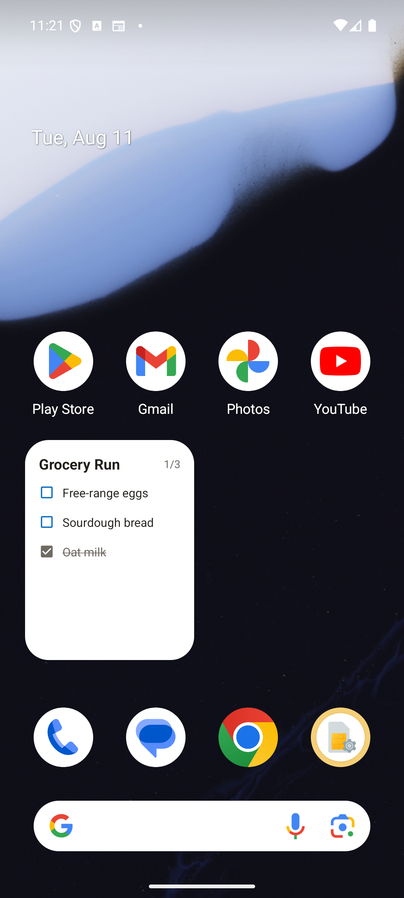
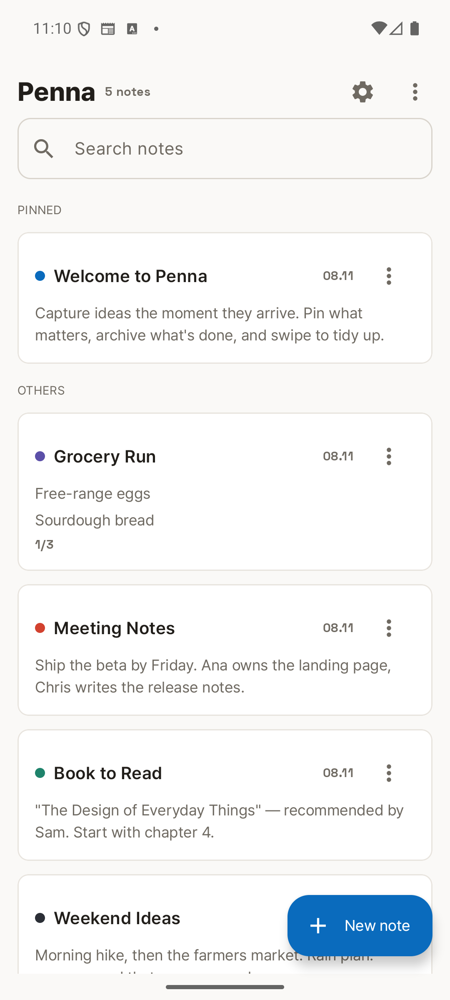
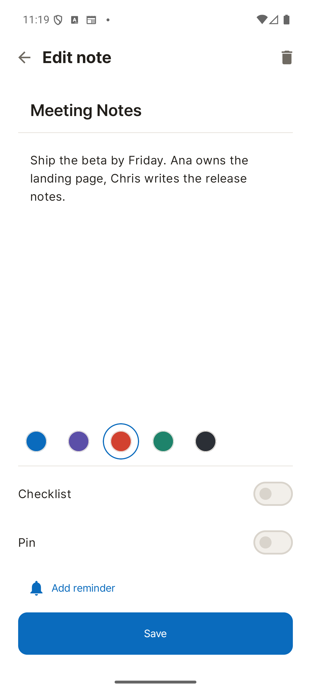
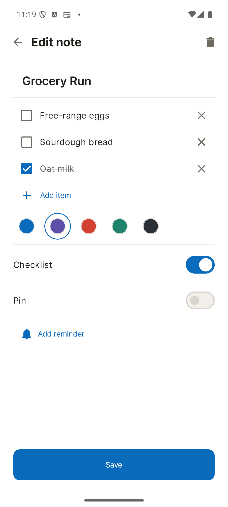
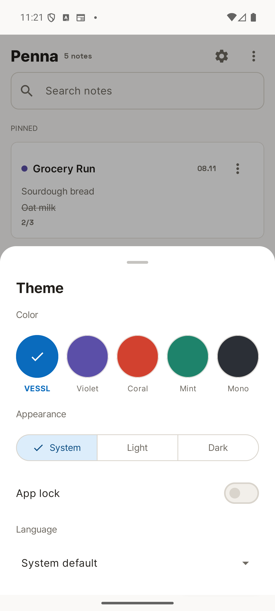
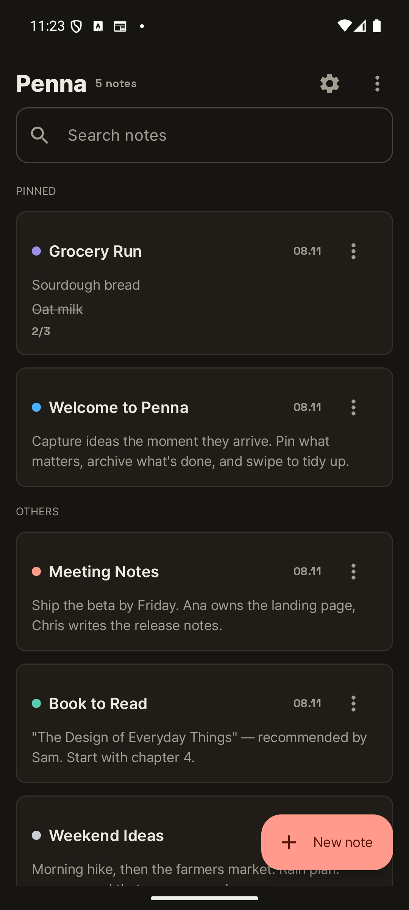
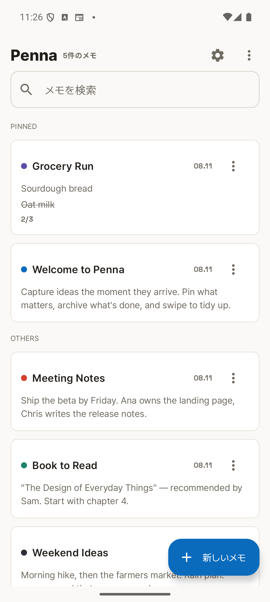
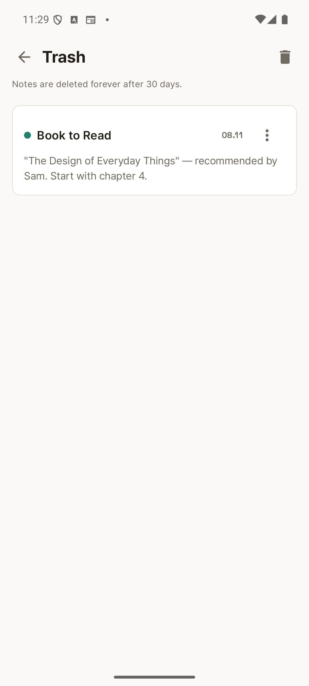

2호 앱 개발 진행 보고
1호 앱 Diem에서 만든 판매용 골격을 그대로 이식해, 노트 앱으로 전환을 마쳤습니다. 기능 구현과 품질 검증은 끝났고 지금은 출시 준비 단계입니다. 아래는 무엇을 만들었고 무엇이 남았는지에 대한 요약입니다.
v0.3.0 · 2026년 8월 11일 · 개발 빌드 기준
위젯의 체크박스를 직접 누릅니다
Google Keep도, ColorNote도 홈 화면 위젯을 누르면 앱이 열릴 뿐입니다. 장바구니 목록을 마트에서 하나씩 지우려면 매번 앱을 켜야 하죠. Penna는 위젯 위의 체크박스를 그 자리에서 눌러 항목을 지웁니다.

글이 잘 읽히는 것을 첫 번째 기준으로 삼았습니다

제목을 가장 크게 두고, 색은 작은 점으로만 표시합니다. 고정한 노트는 위쪽에 따로 묶이고, 날짜는 오른쪽에 작게 붙습니다.

처음에는 아래에서 올라오는 시트였는데, 입력란이 좁다는 지적을 받아 전체화면으로 바꿨습니다. 본문이 화면의 40% 정도를 차지합니다.

체크한 항목은 줄이 그어지며 목록 맨 아래로 내려갑니다. 남은 일만 위에 모이도록.




응답 없음 현상의 원인
개발 중 앱이 간헐적으로 멈추는 현상이 있었습니다. 시스템이 남긴 오류 기록을 복구해 들여다봤더니, 원인은 앱 코드가 아니라 광고 SDK였습니다. 광고가 표시되지도 않는 지역에서까지 브라우저 엔진 전체를 앱 시작 시점에 끌어오고 있었고, 그 부담이 화면 그리기를 5초 넘게 붙잡았습니다. 초기화를 광고가 실제로 필요한 순간으로 옮겨 해결했습니다.
| 항목 | 전 | 후 |
|---|---|---|
| 시작 소요 | 2,868 ms | 1,552 ms |
| 화면 멈춤 | 3회 (최대 1.6초) | 없음 |
| 메모리 | 178 MB | 111 MB |
| 스레드 | 77 | 37 |
이 밖에 편집 화면·표시 오류·접근성까지 검토를 여섯 차례, 실제 기기 점검을 세 차례 돌렸고 발견된 문제는 모두 고쳤습니다.